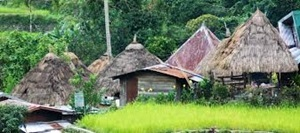
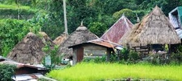

Gallery
 

Welcome to the Philippines
This tour will take you through some of the most beautiful and culturally rich places in the Philippines. From the bustling streets of Manila to the serene beaches of Boracay, each destination offers a unique experience. The Philippines is known for its stunning landscapes, vibrant culture, and delicious cuisine. Whether you're looking to relax on the beach, explore historical sites, or indulge in local delicacies, this tour has something for everyone.
- Manila
- Cebu
- Banaue Rice Terraces
- Palawan
- Food of the Philippines